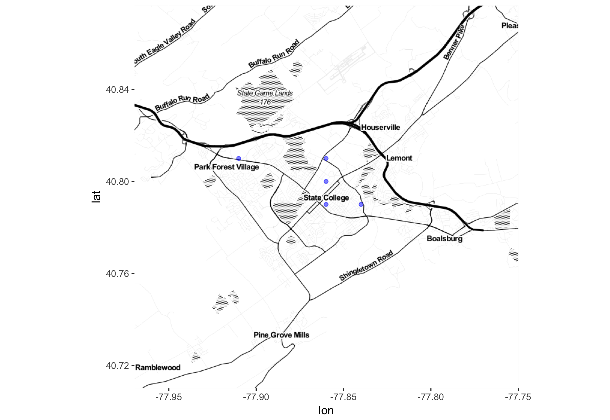

I’m using this document to orient people to the software we are going to use in this workshop. I’m doing this via a document rather than in “lecture” mode because I want to spend time at the start of the workshop ensuring that all participants can access the software they will need.
You’ll be doing a few start-up calculations within this document. Each of the “code blocks” in the following is an interface to a complete R session, which often will have been pre-populated with data and commands. The idea is to get you reading commands for data wrangling and visualization and give you a concrete foundation for learning about them more systematically, as we’ll do in the rest of the workshop.
Let’s start.
The data frame Starbucks describes the location and some other aspects of individual Starbucks coffee shops. Run the code in the following code block (better term needed! “session window”?) to see the names of the variables and a few cases from the table.
Starbucks %>% nrow()
Starbucks %>% head()Make a point-graph of latitude versus longitude of the locations.
Starbucks %>% gf_point(lat ~ long)Since this is USCOTS and not ICOTS, for the moment let’s focus on just those Starbucks in the US. The following (simple!) wrangling command extracts just those shops where the country variable has the level for Great Britain. Change it to correspond to the US.
Starbucks %>%
filter(country == "GB") %>%
gf_point(lat ~ long) %>%
gf_refine(theme(aspect.ratio=1))alpha) to the individual points. Potentially, this technique can let you see clusters of Starbucks. The transparency, alpha, is a number between 0 (completely transparent) and 1 (completely opaque). Try varying values for alpha to see if you can find one that makes it possible both to spot isolated shops and to locate concentrations of shops. You’ll also notice a wrangling statement that restricts the plot to the lower 48 states.Starbucks %>%
filter(country == "US") %>%
filter( ! state %in% c("AK", "HI")) %>%
gf_point(lat ~ long + alpha:0.5) %>%
gf_refine(theme(aspect.ratio=1))Since this workshop is being held in State College, PA, let’s look at the Starbuck situation there. The longitude of State College is -77.9 degrees; the latitude is 40.8 degrees.
One way to restrict the graphic to the State College area is to instruct the graphics system to use specific bounds on the x- and y-axes. The next command will restrict the displayed part of a graphic to \(\pm\) 0.25 degree around the State College location.
gf_lims(x = -77.9 + c(-.25, .25), y = 40.8 + c(-.25, .25))Go back to the previous code block and add the above line to the sequence of commands. Put it on its own line. And make sure to connect the new line to the previous lines by putting the %>% token at the end of the line before this one.
You can get surprisingly far with a simple point plot, but the State College plot lacks context. This is often a problem with simple, stark modes of graphics.
One can have a meaningful debate about whether it’s best to start with the basics (e.g. a point plot) or instead use techniques that are more of a match for the graphics our students are encountering everyday. Let’s put it to an empirical test by making a plot that’s closer to everyday graphics.

For the sake of speed, not knowing how fast our internet connections will be, I’ve cached the map under the name state_college_map. The statement that brings in the map directly from the internet is commented out in the first line of the code block. If you want to play with the zoom level or the location, uncomment that line and instead comment out the line state_college_map %>%.
Yes and no. You are using a new product from RStudio called learnr. The learnr package allows you to create web documents in which a practically complete version of R is running.
Rather than typing commands in the console, or in an Rmd document, you will enter commands in the code blocks. To run the commands, press “Run code.”
Sometimes, you will find the code blocks pre-populated with working code or with fragments of code. These won’t run properly until you edit the fragments into working R commands.
Your own browser will keep track of changes you make in the code blocks. If you wish to clean the slate, press the “start over” link below the menu on the left side of the plate.
Of course, every command you’ll use in documents such as this will run in any version of R.
My personal experience suggests we are approaching a limit \(\epsilon \rightarrow 0\) where there is a Starbucks within distance \(\epsilon\) of any point in the US, it is still happily the case that some places have a nearby Starbucks and other places don’t. That is, the presence of a Starbucks varies from place to place in the US.
In this exercise, you’re going to try to account for that variation. That is, you’ll consider some possible explanatory variables that might provide insight into the observed pattern. As you’ll see, you have to do some data wrangling to get to the point where you can easily construct a statistical model of Starbucks locations.
To start, we have to define what “location” means. A Starbucks executive might be interested in specifying location in terms of pedestrial traffic, parking availability, etc. I’m more interested in demographic and economic conditions in the area around the Starbucks. So I’m going to define “location” to mean the ZIP code (ZIP is the US name for a postal code) in which the Starbucks is located.
TheZipDemography data table (currently in the DataComputing package) records 43 variables about each ZIP code (as well as the ZIP code itself). Let’s take a quick look:
ZipDemography %>% nrow()
ZipDemography %>% names()The ZipDemography table is based on information collected by the US Census Bureau. In contrast, the Starbucks data was assembled by the Starbucks corporation. In ZipDemography, the unit of observation is a ZIP code. In Starbucks, the unit of observation is a single coffee shop.
The next code block contains statements for bringing the two data tables together. It’s a bit complex, and might well be the kind of thing you would want to pre-compute for your students. That’s what I’ll do here, for you. We’ll talk in detail about the operations later in the workshop. For fun, let’s call the merged data ZIPbucks.
ZIPbucks <-
ZipDemography %>%
left_join(Starbucks, by = c("ZIP" = "postcode")) %>%
mutate(has_starbucks = !is.na(long))ZIPbucks <-
ZipDemography %>%
left_join(Starbucks, by = c("ZIP" = "postcode")) %>%
mutate(has_starbucks = !is.na(long))Now we can start to do some statistics! For instance, how does the median household income differ between Starbucks and non-Starbucks ZIP codes?
ZIPbucks %>%
gf_boxplot(Medianhouseholdincomedollars ~ has_starbucks)In this activity, you’ve made some graphics and done some wrangling. This is typical of data-oriented projects. You have to get your data from the form in which they are given into a form that’s ready for graphics. For instance, we started with two data tables, one from Starbucks and the other from the Census Bureau, and needed to merge them in order to look at a possible link between demographics and the presence of a Starbucks shop.
I’ll use the term glyph-ready to refer to data that have been wrangled into a form that can be directly used in graphics. As you’ll see, glyph-ready is also “model-ready”, as in the following.
glm(has_starbucks ~ MedianAge + Percapitaincomedollars,
data = ZIPbucks,
family = "binomial") %>%
summary()We’ll be using two main software systems in R, which you have now already seen at work:
ggplot system. The interface is provided by the ggformula package which I wrote along with Randy Pruim.dplyr package.Both ggplot and dplyr are the work of Hadley Wickham and his collaborators. They are perenially among the top 10 most popular packages in R.